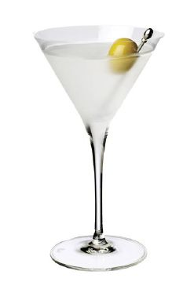

O Dry Martini é considerado o rei dos cocktails, uma bebida elegante e sofisticada que representa a essência da coquetelaria clássica.
Método de Preparo
GuarniçãoEsprema o óleo da casca de limão sobre a bebida, ou decore com azeitonas verdes se solicitado. |
 |
Uma das teorias mais frequentemente citadas é que o "Professor" Jerry Thomas, um barman famoso e influente do século XIX, inventou a bebida no Hotel Occidental em São Francisco, algures entre o final da década de 1850 ou início de 1860. Segundo a história, um mineiro, prestes a partir numa viagem para Martinez, Califórnia, colocou uma pepita de ouro no bar e pediu a Thomas para lhe preparar algo especial. Thomas produziu uma bebida contendo gin Old Tom (adoçado), vermute, bitters e Maraschino, e apelidou-a de "Martinez" em honra do destino do cliente.